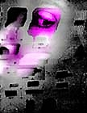

|
- Antique television cabinet
- Metal welding cabinet
- 5, 13" Samsung televisions
- 1, Sony Watchman
- European motorcycle
- Chassis, 2 exhaust pipes
- Speaker ® 2 Pioneer laser disk players
- 2 original Paik laser disks
The above list constitutes the components of Nam June Paik's work entitled, Phiber Optik. The sculptural work stands about seven feet high and was one of thirty works in his monumental installation at the San Jose Museum of Art (Spring 96) which he calls Cybertown. Paik is an artist attempting to develop a language that creates a bridge from our object-oriented world to an illusory and transitory electronic domain which is becoming increasingly more prevalent in our global culture.
The first impression of Phiber Optik is one of a huge, dark robot-like motorcycle being that is not rider and machine, but a unified entity. Until one looks beyond the surface to the intent, Phiber Optik almost comes across as humorous. Why did Paik choose to create a dark image illuminated only by the flickering digital imagery of television screens? "Dark" is a loaded word. It summons visions of stealth and furtiveness, as well as the mystical, the enigmatic, the abstract, the secret, the hidden, the surreptitious, the unauthorized, the illegal, and the prohibited.

The "life-force" of this entity emanates in the form of electronic imagery flowing from the six television screens which constitute it's "body." The image of this electronic rider is at once alarming and enigmatic. It's size alone creates a presence not easily ignored. Yet, the patchwork blending of motorcycle parts, antique cabinet, and electronic equipment, emphasized by the collage of motor-highway bumperstickers, effects a makeshift, somewhat precarious feeling of instability, a feeling that at any moment the whole structure could fall apart, disassembling into a heap of junk-yard motorcycle parts, dead electronic circuits, and vacant television screens.
Conceptually, this work could be compared with Ernest Trova's sculpture Falling Man (1966). Although the visual characteristics are dissimilar, Trova and Paik both address issues of technology, and incorporate man and machine as a hybrid being. Trova's work was done before computers and technology became so prosaic in our culture, and the Disney-esque idealism of that era shows in the minimalist, smooth, shining, and polished surfaces. Paik's Phiber Optik, on the other hand, is shaped by a perhaps more realistic, retrospective view of technology. Today, computers only a few years old are junked, considered out of date and unusable. Paik constructs new forms out of the cast-offs of technology, forms that are not beautiful, that do not predict a perfect future through technology, but forms that challenge that utopian ideal, forms that say, "This is the way things are."
Who is Phiber Optik?
The title, Phiber Optik, is very important to understanding this piece. Paik's work is an attempt to objectify a unique immaterial culture developed in an electronic environment on the Internet. Phiber Optik is an ominous vision, a stationary motorcycle rider alive with digital activity, a visual representation of the attitude and antics of one of the first teenage on-line hackers, Mark Abene. The term "phiber optik" is derived from fiber optics, a branch of physics that deals with "thin transparent fibers of glass or plastic that are enclosed by material of a lower index of refraction and that transmit light throughout their length by internal reflections."(1) These fibers are flexible and can be bent around corners to conduct light and images, and are used in information and communications technologies.
"Phiber Optik" was Mark's cyberspace "handle," his electronic on-line identity. This persona existed in a realm accessed by computers and modems, a realm that consists of information deployed by switches, telephone lines, cables, and electronic circuits. Coupled with the imagination of the human mind this combination has created neoteric virtual communities. Mark was a pioneer in one of the first of these on-line "brotherhoods," one of the first computer hackers that "broke the code" and entered a world where he gained respect as a hero in a community of like-minded, intelligent teenagers riding the information superhighway for a thrill. As Phiber Optik, Mark was no longer the skinny teenager "thin and pale as the underside of an index finger..(with)...otter-sleek black hair, meticulously clipped and combed." (2) On-line, he became legendary, a member of the infamous Legion of Doom, a gang of teenage computer hackers obsessed with breaking and entering -- cracking the security of the phone company's computer system.
Phiber Optik is this image of Mark Abene's alter ego. Phiber Optik came alive on-line. Logins and passwords, "philes," and codes were the language in his world. It was a language his parents didn't understand. It was a language he spoke to his peers, others like him escaping the dreary landscape and physical reality of their lives in the New York tenements. "The LOD members all fancied themselves specialists in some dark art," (3)sharing their expertise in a nascent technology.
On the Digital Highway
The work by Paik describes Phiber Optik, an entity that Mark created in an intangible world, but one that Paik portrays in the material world in simple, understandable Our society connects power and sex with the machine -- what we drive is an expression of who we are. The motorcycle represents the anti-social "wild one." Paik creates his electronic rebel by using familiar and recognizable elements -- the motorcycle, the robot, television screens, digital imagery, and the ever present bumper sticker. By so doing, Paik forces viewers to accept the "reality" of this transitory entity, who for a period of time was leader of the hacker pack. Instead of the speed of the wind and the rumble of the motorcycle engine, one is confronted with a fixed and static form emitting flickering digital imagery. The picture of Mark comes to mind, sitting virtually motionless at his computer late into the night, the VDT screen casting a greenish light in his face, as he remains entranced by the enticing electronic frontier before him, exploring without any particular goal, captivated by his discovery of the new commodity of digital information and the challenge of secretly outsmarting the system.
Mark no longer rides the digital highways as Phiber Optik; the wild one was put behind bars. Yet a new generation follows in his footsteps, and what Paik has captured in his work, Phiber Optik, is the essence of "alienated adolesence" (4) in a wired world. Paik's statement is a comment on our culture. Here is a trend where teenagers go on-line and form gangs, rather than joining street gangs. To Mark's parents, his seemingly innocent computer activities kept him out of trouble, and they were shocked when Mark was arrested and went to jail.
Mark opted for staying up all night breaking and entering electronically instead of studying -- school bored him. It is now the nationwide intent to get every school on-line. How will that affect the Marks of the future? When something becomes commonplace, it is no longer a challenge, and teenagers so love a challenge. They have an innate need to prove themselves, to be important and respected as an individual within a community. This is what Mark Abene found as Phiber Optik. Obviously he had not found it as Mark Abene the skinny teenager. If computers had been available to him in school, would he have found a different outlet, a place of respect within his school, and with his classmates?
A more current look at the new generation of computer enthusiasts, indicates that businesses are cultivating and redirecting this avid teenage fixation. There are now computers in schools that allow learning the language of computers at an early age. Like Mark Abene, many are self-taught, and their efforts are repaid not with jail, but by becoming mainstreamed into the part-time workforce. Companies need them because of the massive explosion on the Internet: "This is a new medium, and these young people are the ones who really understand this medium. It's a generational thing." (5)
Optimism and the Dark Side
Among those who work with computers everyday, there are the optimists. Nicholas Negraponte in his recent book Being Digital admittedly is an optimist, although he recognizes the "dark side" of the digitalization of information, which is where Mark Abene found himself: "intellectual-property abuse..., invasion of privacy, digital vandalism, software piracy, and data thievery."(6) (Negroponte predicts an eventual digital triumph through characteristics inherent to digitilization: "decentralizing, globalizing, harmonizing, and empowering."(7) He also says, "Like a force of nature, the digital age cannot be denied or stopped." (8) He sees the computer, coincidental with appropriate modifications in teaching methodologies, helping the young to use both right brain and left brain in activities simultaneously -- such as using a computer language to create an image). He states:
Computer hackers young and old are an excellent example. Their programs are like surrealist paintings, which have both aesthetic qualities and technical excellence. Their work is discussed both in terms of style and content, meaning and performance. The behavior of their computer programs has a new kind of aesthetic. These hackers are the forerunners of the new "e-xpresionists." (9)
Hybrid Digital Art
Does Paik see Mark Abene as an artist? Very possibly. Negroponte believes that artists have the "opportunity" to assist in the mediation of digital change -- they can provide the "hook." Is this what Paik's prodigious installation, Cybertown, accomplishes? Negroponte says that "the digital superhighway will turn finished and unalterable art into a thing of the past...," and that "being digital allows the process, not just the product, to be conveyed."(10) Perhaps, Paik is taking a step in that direction at least with his digital imagery, but his work is still very much the product. Our culture remains in the mindset of the preciousness and ownership of the material object. That's a difficult mindset to break.
In the future, as each generation becomes more digital, through alterations in lifestyle and changes in cultural values, we may see Negroponte's prediction come true. Until that time, we will no doubt see increasingly more hybrid digital art, the fusion of product and process which we see in Phiber Optik.
|